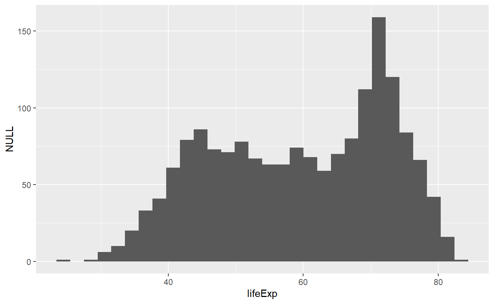
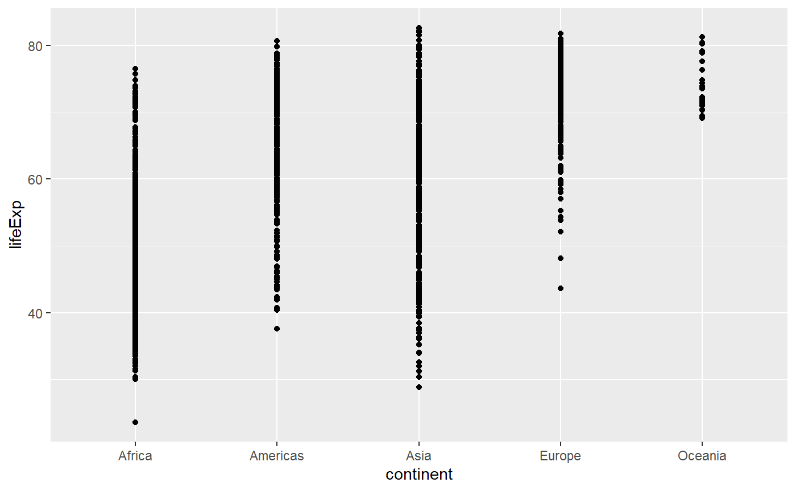
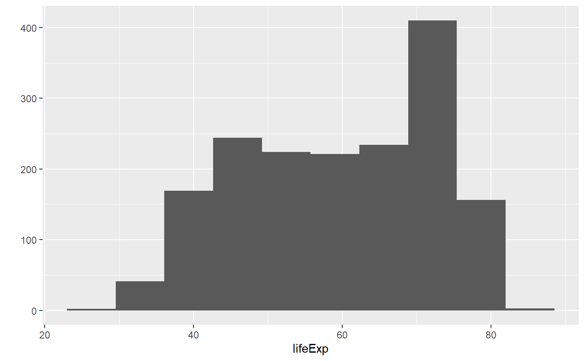
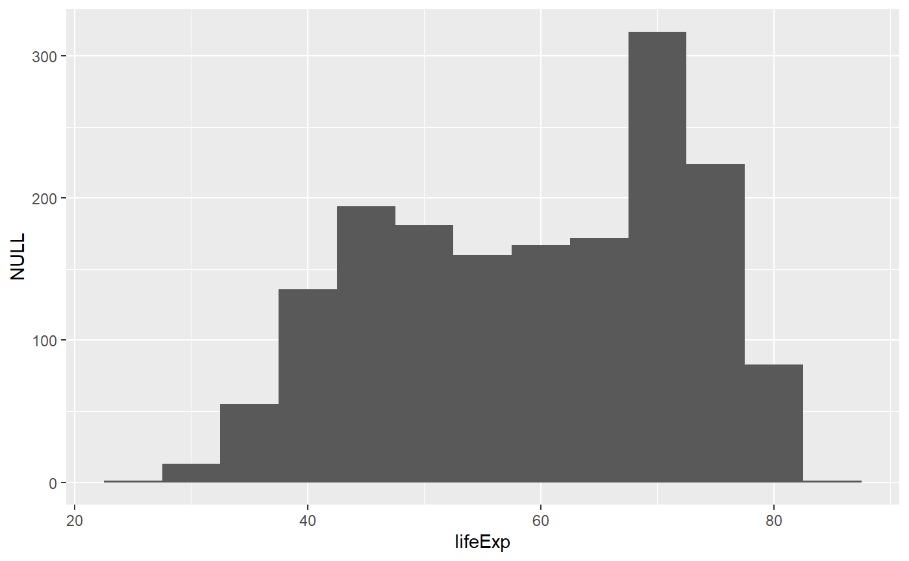
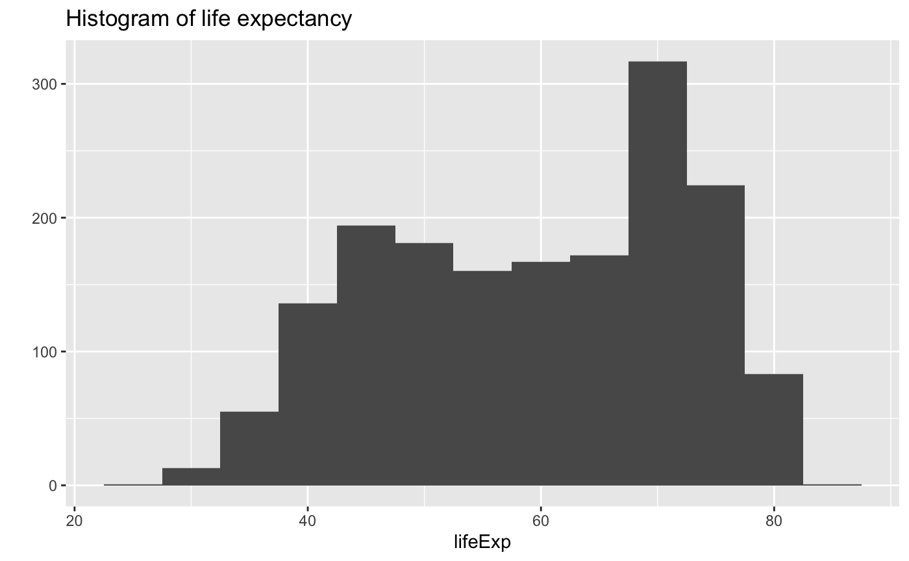
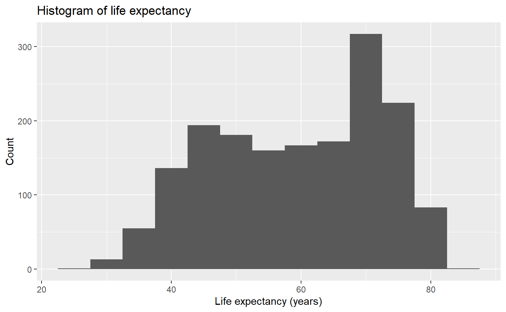
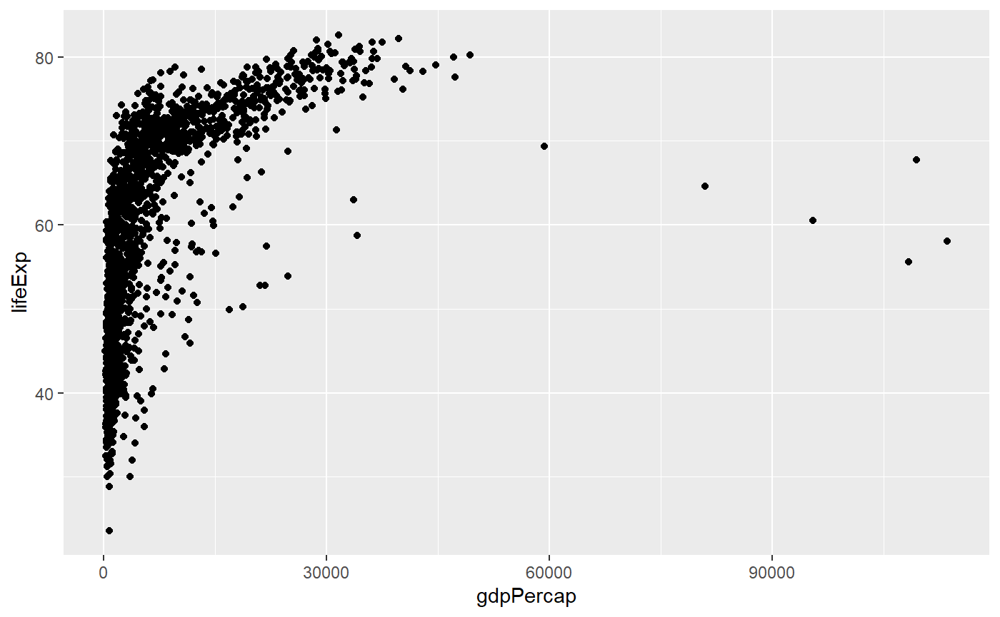
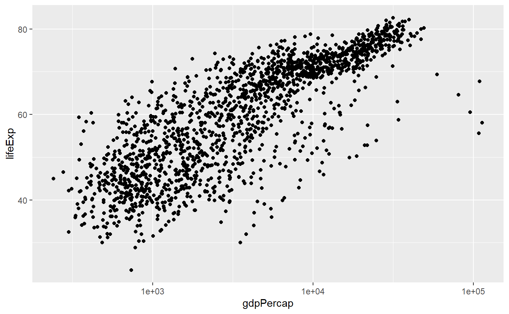
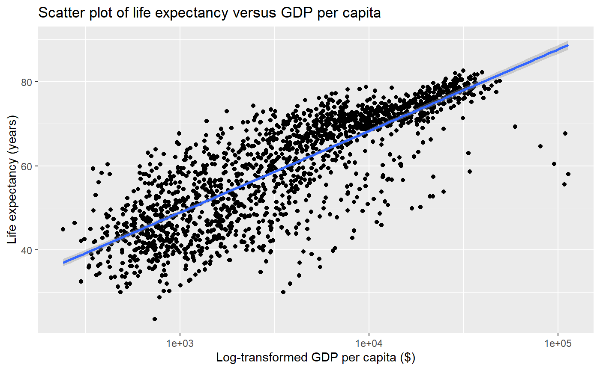
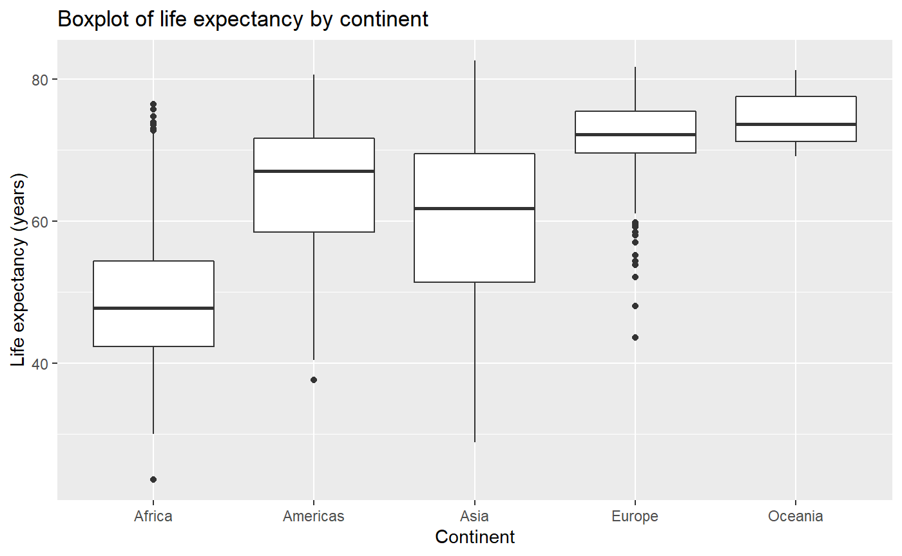

Part 1: Fundamentals of data import, structuring, and plotting in tidyverse
Source:vignettes/group-01_Fundamentals-data-wrangling-tidyverse.Rmd
group-01_Fundamentals-data-wrangling-tidyverse.Rmdlibrary(ubcBIOL548L)
library(gapminder)
library(ggplot2)
library(tidyr)
library(dplyr)
#>
#> Attaching package: 'dplyr'
#> The following objects are masked from 'package:stats':
#>
#> filter, lag
#> The following objects are masked from 'package:base':
#>
#> intersect, setdiff, setequal, union
library(tibble)
library(readr)
library(readxl)Introduction
This is an R workshop created for a graduate data visualization course at the University of British Columbia by Vikram Baliga, Andrea Gaede and Shreeram Senthivasan.
There are three groups with increasing levels of difficulty. Each group has a set of learning objectives.
Group 1: Load a clean data file into R and make boxplots and scatterplots
Learning Objectives:
- Determine how to import and control data stored in different filetypes
- Understand the best practices for structuring data in tidyverse/ggplot
- Construct basic plots using ggplot
Lesson:
Importing data:
Import data using base R command, and give it the name my_data
Take a look at your data
# Structure
str(my_data)
#> 'data.frame': 1704 obs. of 6 variables:
#> $ country : Factor w/ 142 levels "Afghanistan",..: 1 1 1 1 1 1 1 1 1 1 ...
#> $ continent: Factor w/ 5 levels "Africa","Americas",..: 3 3 3 3 3 3 3 3 3 3 ...
#> $ year : int 1952 1957 1962 1967 1972 1977 1982 1987 1992 1997 ...
#> $ lifeExp : num 28.8 30.3 32 34 36.1 ...
#> $ pop : int 8425333 9240934 10267083 11537966 13079460 14880372 12881816 13867957 16317921 22227415 ...
#> $ gdpPercap: num 779 821 853 836 740 ...
# Summarize columns
summary(my_data)
#> country continent year lifeExp
#> Afghanistan: 12 Africa :624 Min. :1952 Min. :23.60
#> Albania : 12 Americas:300 1st Qu.:1966 1st Qu.:48.20
#> Algeria : 12 Asia :396 Median :1980 Median :60.71
#> Angola : 12 Europe :360 Mean :1980 Mean :59.47
#> Argentina : 12 Oceania : 24 3rd Qu.:1993 3rd Qu.:70.85
#> Australia : 12 Max. :2007 Max. :82.60
#> (Other) :1632
#> pop gdpPercap
#> Min. :6.001e+04 Min. : 241.2
#> 1st Qu.:2.794e+06 1st Qu.: 1202.1
#> Median :7.024e+06 Median : 3531.8
#> Mean :2.960e+07 Mean : 7215.3
#> 3rd Qu.:1.959e+07 3rd Qu.: 9325.5
#> Max. :1.319e+09 Max. :113523.1
#>
# Get column names (good for wide datasets)
names(my_data)
#> [1] "country" "continent" "year" "lifeExp" "pop" "gdpPercap"
# Get first 6 lines
head(my_data)
#> country continent year lifeExp pop gdpPercap
#> 1 Afghanistan Asia 1952 28.801 8425333 779.4453
#> 2 Afghanistan Asia 1957 30.332 9240934 820.8530
#> 3 Afghanistan Asia 1962 31.997 10267083 853.1007
#> 4 Afghanistan Asia 1967 34.020 11537966 836.1971
#> 5 Afghanistan Asia 1972 36.088 13079460 739.9811
#> 6 Afghanistan Asia 1977 38.438 14880372 786.1134
# Get last 6 lines
tail(my_data)
#> country continent year lifeExp pop gdpPercap
#> 1699 Zimbabwe Africa 1982 60.363 7636524 788.8550
#> 1700 Zimbabwe Africa 1987 62.351 9216418 706.1573
#> 1701 Zimbabwe Africa 1992 60.377 10704340 693.4208
#> 1702 Zimbabwe Africa 1997 46.809 11404948 792.4500
#> 1703 Zimbabwe Africa 2002 39.989 11926563 672.0386
#> 1704 Zimbabwe Africa 2007 43.487 12311143 469.7093Arguments can be added to a function using commas
Note: arguments with the default setting are hidden, unless specified. Here n changes the default from 6 to 10 lines
head(my_data, n = 10)
#> country continent year lifeExp pop gdpPercap
#> 1 Afghanistan Asia 1952 28.801 8425333 779.4453
#> 2 Afghanistan Asia 1957 30.332 9240934 820.8530
#> 3 Afghanistan Asia 1962 31.997 10267083 853.1007
#> 4 Afghanistan Asia 1967 34.020 11537966 836.1971
#> 5 Afghanistan Asia 1972 36.088 13079460 739.9811
#> 6 Afghanistan Asia 1977 38.438 14880372 786.1134
#> 7 Afghanistan Asia 1982 39.854 12881816 978.0114
#> 8 Afghanistan Asia 1987 40.822 13867957 852.3959
#> 9 Afghanistan Asia 1992 41.674 16317921 649.3414
#> 10 Afghanistan Asia 1997 41.763 22227415 635.3414The helpfile lists what arguments are available
A better import option using Tidyverse
my_data <- read_csv("gapminder.csv")
#> Parsed with column specification:
#> cols(
#> country = col_character(),
#> continent = col_character(),
#> year = col_double(),
#> lifeExp = col_double(),
#> pop = col_double(),
#> gdpPercap = col_double()
#> )
# Cleaner import and print with read_csv, don't need head()
my_data
#> # A tibble: 1,704 x 6
#> country continent year lifeExp pop gdpPercap
#> <chr> <chr> <dbl> <dbl> <dbl> <dbl>
#> 1 Afghanistan Asia 1952 28.8 8425333 779.
#> 2 Afghanistan Asia 1957 30.3 9240934 821.
#> 3 Afghanistan Asia 1962 32.0 10267083 853.
#> 4 Afghanistan Asia 1967 34.0 11537966 836.
#> 5 Afghanistan Asia 1972 36.1 13079460 740.
#> 6 Afghanistan Asia 1977 38.4 14880372 786.
#> 7 Afghanistan Asia 1982 39.9 12881816 978.
#> 8 Afghanistan Asia 1987 40.8 13867957 852.
#> 9 Afghanistan Asia 1992 41.7 16317921 649.
#> 10 Afghanistan Asia 1997 41.8 22227415 635.
#> # ... with 1,694 more rows
# Note that words read in as `chr` not `factors`, this is good!
str(my_data)
#> Classes 'spec_tbl_df', 'tbl_df', 'tbl' and 'data.frame': 1704 obs. of 6 variables:
#> $ country : chr "Afghanistan" "Afghanistan" "Afghanistan" "Afghanistan" ...
#> $ continent: chr "Asia" "Asia" "Asia" "Asia" ...
#> $ year : num 1952 1957 1962 1967 1972 ...
#> $ lifeExp : num 28.8 30.3 32 34 36.1 ...
#> $ pop : num 8425333 9240934 10267083 11537966 13079460 ...
#> $ gdpPercap: num 779 821 853 836 740 ...
#> - attr(*, "spec")=
#> .. cols(
#> .. country = col_character(),
#> .. continent = col_character(),
#> .. year = col_double(),
#> .. lifeExp = col_double(),
#> .. pop = col_double(),
#> .. gdpPercap = col_double()
#> .. )
# But underlying data is the same
summary(my_data)
#> country continent year lifeExp
#> Length:1704 Length:1704 Min. :1952 Min. :23.60
#> Class :character Class :character 1st Qu.:1966 1st Qu.:48.20
#> Mode :character Mode :character Median :1980 Median :60.71
#> Mean :1980 Mean :59.47
#> 3rd Qu.:1993 3rd Qu.:70.85
#> Max. :2007 Max. :82.60
#> pop gdpPercap
#> Min. :6.001e+04 Min. : 241.2
#> 1st Qu.:2.794e+06 1st Qu.: 1202.1
#> Median :7.024e+06 Median : 3531.8
#> Mean :2.960e+07 Mean : 7215.3
#> 3rd Qu.:1.959e+07 3rd Qu.: 9325.5
#> Max. :1.319e+09 Max. :113523.1Other formats for import
my_data <- read_delim("gapminder.csv", ',')
#> Parsed with column specification:
#> cols(
#> country = col_character(),
#> continent = col_character(),
#> year = col_double(),
#> lifeExp = col_double(),
#> pop = col_double(),
#> gdpPercap = col_double()
#> )
# Looks like a weird error
my_data <- read_excel("gapminder.xlsx")
#> New names:
#> * `` -> ...2
#> * `` -> ...3
#> * `` -> ...4
#> * `` -> ...5
#> * `` -> ...6Ways to clean up your data during import
# Inspect with head, or excel. We see two junk rows:
head(my_data)
#> # A tibble: 6 x 6
#> `Gapminder data` ...2 ...3 ...4 ...5 ...6
#> <chr> <chr> <chr> <chr> <chr> <chr>
#> 1 43685 12423 <NA> <NA> <NA> <NA>
#> 2 country continent year lifeExp pop gdpPercap
#> 3 Afghanistan Asia 1952 28.801 8425333 779.4453145
#> 4 Afghanistan Asia 1957 30.332 9240934 820.8530296
#> 5 Afghanistan Asia 1962 31.997 10267083 853.10071
#> 6 Afghanistan Asia 1967 34.02 11537966 836.1971382
# This can be solved by adding an argument `skip` is the number of rows to skip
my_data <- read_excel("gapminder.xlsx",
skip = 2)
my_data <- read_csv("gapminder.csv",col_names = FALSE)
#> Parsed with column specification:
#> cols(
#> X1 = col_character(),
#> X2 = col_character(),
#> X3 = col_character(),
#> X4 = col_character(),
#> X5 = col_character(),
#> X6 = col_character()
#> )
# Setting `col_names` to false made the column headers row one and added dummy column names
my_data
#> # A tibble: 1,705 x 6
#> X1 X2 X3 X4 X5 X6
#> <chr> <chr> <chr> <chr> <chr> <chr>
#> 1 country continent year lifeExp pop gdpPercap
#> 2 Afghanistan Asia 1952 28.801 8425333 779.4453145
#> 3 Afghanistan Asia 1957 30.332 9240934 820.8530296
#> 4 Afghanistan Asia 1962 31.997 10267083 853.10071
#> 5 Afghanistan Asia 1967 34.02 11537966 836.1971382
#> 6 Afghanistan Asia 1972 36.088 13079460 739.9811058
#> 7 Afghanistan Asia 1977 38.438 14880372 786.11336
#> 8 Afghanistan Asia 1982 39.854 12881816 978.0114388
#> 9 Afghanistan Asia 1987 40.822 13867957 852.3959448
#> 10 Afghanistan Asia 1992 41.674 16317921 649.3413952
#> # ... with 1,695 more rows# We're now going to import the gapminder dataset using the preferred read_csv() function
my_data <- read_csv("gapminder.csv",col_names = TRUE)
#> Parsed with column specification:
#> cols(
#> country = col_character(),
#> continent = col_character(),
#> year = col_double(),
#> lifeExp = col_double(),
#> pop = col_double(),
#> gdpPercap = col_double()
#> )# This looks correct. Note: TRUE is the default so was not needed above
my_data
#> # A tibble: 1,704 x 6
#> country continent year lifeExp pop gdpPercap
#> <chr> <chr> <dbl> <dbl> <dbl> <dbl>
#> 1 Afghanistan Asia 1952 28.8 8425333 779.
#> 2 Afghanistan Asia 1957 30.3 9240934 821.
#> 3 Afghanistan Asia 1962 32.0 10267083 853.
#> 4 Afghanistan Asia 1967 34.0 11537966 836.
#> 5 Afghanistan Asia 1972 36.1 13079460 740.
#> 6 Afghanistan Asia 1977 38.4 14880372 786.
#> 7 Afghanistan Asia 1982 39.9 12881816 978.
#> 8 Afghanistan Asia 1987 40.8 13867957 852.
#> 9 Afghanistan Asia 1992 41.7 16317921 649.
#> 10 Afghanistan Asia 1997 41.8 22227415 635.
#> # ... with 1,694 more rowsPlotting:
Make a histogram
# This command makes a histogram of the `lifeExp` column of the `my_data` dataset
qplot(x = lifeExp, data = my_data)
#> `stat_bin()` using `bins = 30`. Pick better value with `binwidth`.

# The same function here makes a dot plot because the x axis is categorical
qplot(x = continent, y = lifeExp, data = my_data)
How can the same function make three different classes of plots?
One of the hidden arguments is geom which specifies the type of plot. The default is auto which leads to a guess of the plot type based on the data type(s) in the column(s) you specify.
Type ?qplot in the console to read the qplot documentation
Now let’s specify the type of plot explicitly
qplot(x = lifeExp, data = my_data, geom = 'histogram')
#> `stat_bin()` using `bins = 30`. Pick better value with `binwidth`.
# Note that we are now specifying boxplot instead of point plot
qplot(x = continent, y = lifeExp, data = my_data, geom = 'boxplot')
Now let’s change the number of bins in a histogram and make the plot prettier
# The hidden argument `bins` has a default valute of 30
qplot(x = lifeExp, data = my_data, geom = 'histogram')
#> `stat_bin()` using `bins = 30`. Pick better value with `binwidth`.# This changes the number of bins to 10
qplot(x = lifeExp, bins = 10, data = my_data, geom = 'histogram')
# Alternatively you can choose the width you want the bins to have
qplot(x = lifeExp, binwidth = 5, data = my_data, geom = 'histogram')
# Let's add a title
qplot(x = lifeExp, binwidth = 5, main = "Histogram of life expectancy", data = my_data, geom = 'histogram')
# Let's add an x axis label
qplot(x = lifeExp, binwidth = 5, main = "Histogram of life expectancy", xlab = "Life expectancy (years)", data = my_data, geom = 'histogram')# Let's add a y axis label
qplot(x = lifeExp, binwidth = 5, main = "Histogram of life expectancy", xlab = "Life expectancy (years)", ylab = "Count", data = my_data, geom = 'histogram')
# This format is easier to read, but otherwise exactly the same.
# The convention is to break lines after commas.
qplot(x = lifeExp,
binwidth = 5,
main = "Histogram of life expectancy",
xlab = "Life expectancy (years)",
ylab = "Count",
data = my_data,
geom = 'histogram')
Let’s apply a log scale and add a trendline to a scatter plot

# Here the x axis is log transformed
qplot(x = gdpPercap,
y = lifeExp,
log = 'x',
data = my_data,
geom = 'point')
# Let's add a trendline to the data as well.
# The linear regression model (`lm`) will be added on top of our previous plot
qplot(x = gdpPercap,
y = lifeExp,
log = 'x',
main = "Scatter plot of life expectancy versus GDP per capita",
xlab = "Log-transformed GDP per capita ($)",
ylab = "Life expectancy (years)",
data = my_data,
# The following line adds a `smooth` trendline
# We want our regression to be a linear model, or `lm`
method = 'lm',
# the `c()` function allows us to pass multiple variables
# to the `geom` argument
geom = c('point','smooth'))
Finally let’s make a boxplot
qplot(x = continent,
y = lifeExp,
main = "Boxplot of life expectancy by continent",
xlab = "Continent",
ylab = "Life expectancy (years)",
data = my_data,
geom = 'boxplot')